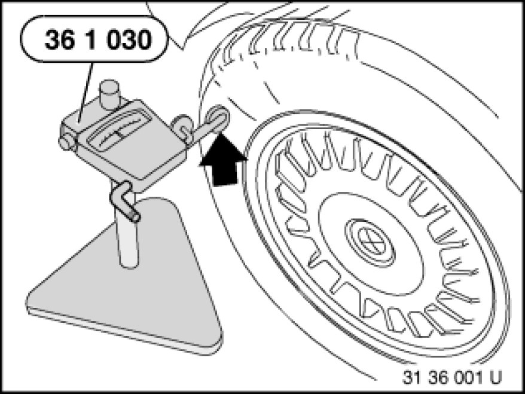
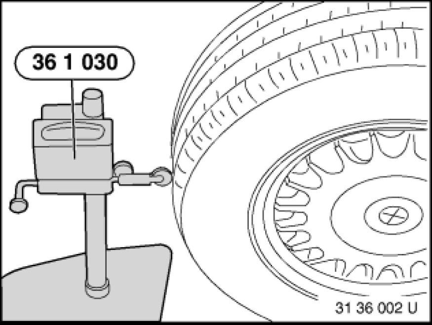
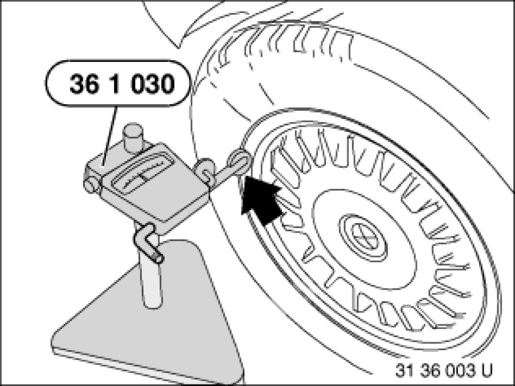

Checking Front and Rear Wheel for Face and Radial Runout
36 10 209 - Checking front and rear wheel for face and radial runout

Special tools required:
- 36 1 030 36 1 030 Tester

Necessary preliminary tasks:
- Check wheel bearings

Lift vehicle.
Check wheel with special tool 36 1 030 36 1 030 Tester (measuring fixture) for lateral runout.

Check wheel with special tool 36 1 030 36 1 030 Tester (measuring fixture) for radial runout.

If applicable, remove balance weights.
Check lateral runout of rim with special tool 36 1 030 36 1 030 Tester (measuring fixture).

Check radial runout of rim with special tool 36 1 030 36 1 030 Tester (measuring fixture).